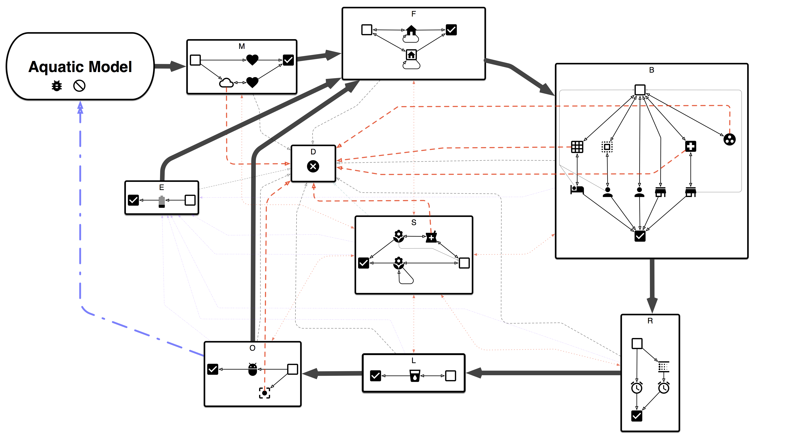
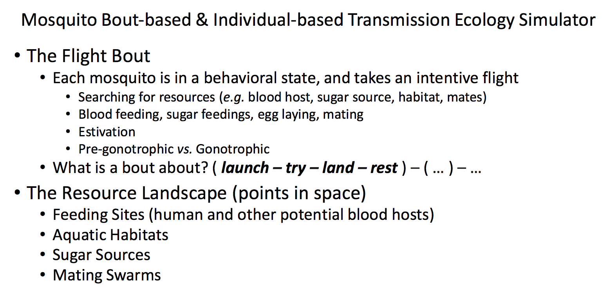
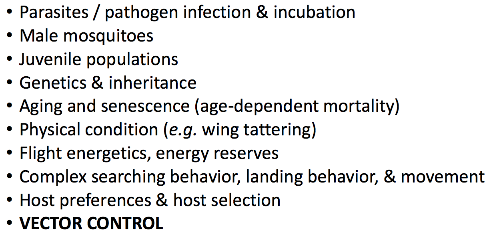
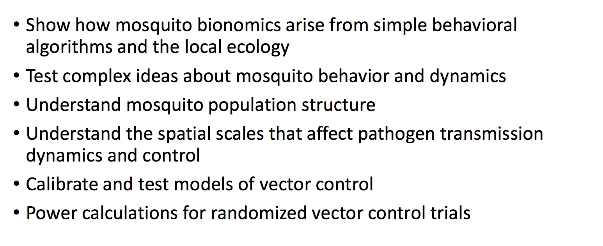
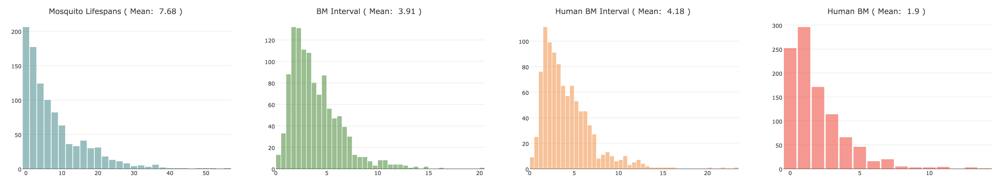

MBITES: Mosquito Bout-based and Individual-based Transmission Ecology Simulation
I. Description




II. Landscape and Mosquitoes
1. Life Cycle and Movement
2. Population Dynamics
3. Individuals-Level Analysis
4. Aquatic Stages



III. Vector Control
1. Life Cycle With Vector Control Interventions
2. Vector Control Analysis Tools
3. Transmission Networks


IV. Closing Remarks
1. Extreme Realism
2. Next Steps
3. The Team